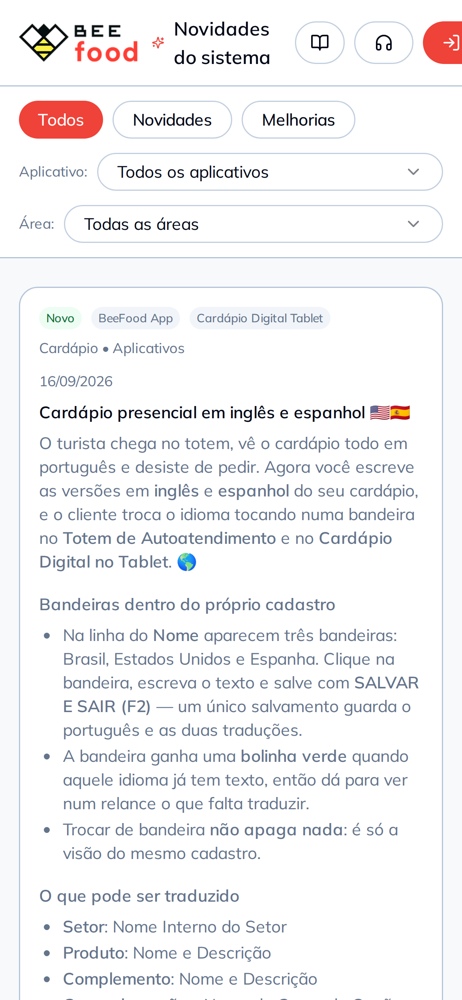

<!-- CTA com um pedido só. O celular está sozinho na faixa: centralizado, recuo
     igual dos dois lados, sangrando pela base. Sem rodapé, porque o aparelho
     cobre a base e o endereço já está no subtítulo, em negrito. -->
<div class="slide slide--capa">
  <div class="topo">
    <span class="logo"></span>
    <span class="contador">7 de 7</span>
  </div>

  <div class="pilha g24" style="margin-top: 50px; max-width: 880px">
    <span class="chapeu">Tem totem ou tablet?</span>
    <h2 class="titulo titulo--pequeno">
      Seu cardápio pode falar inglês <span class="destaque">hoje</span>&nbsp;&#127758;
    </h2>
    <p class="subtitulo">
      Comece pelos mais vendidos. Novidades em <b>beefood.app/novidades</b>.
    </p>
  </div>

  <!-- O título agora ocupa duas linhas, e o celular desceu junto: em 520 px ele
       cobria a última linha do subtítulo. -->
  <div class="sangria" style="top: 600px; right: 230px; width: 620px">
    <div class="celular">
      <div class="celular__tela">
        
      </div>
    </div>
  </div>
</div>
